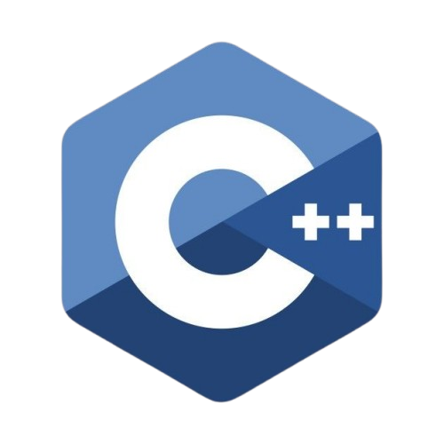

Explore the Courses
Choose a subject to jump directly to its section.
C++ Programming

Note: This section introduces C++ programming and explains how students learn programming fundamentals and problem-solving skills.
C++ is a powerful general-purpose programming language used to develop software, games, operating systems, and high-performance applications. Students learn programming fundamentals, variables, conditions, loops, functions, arrays, and object-oriented programming. Learning C++ helps students develop logical thinking and problem-solving skills.
Number Guessing Game
A simple number guessing game is an example of how C++ uses conditional statements such as if and else. In this game, the computer selects a secret number, and the player tries to guess it.
For example, if the correct number is 7:
- If the player enters 5, the game displays "Try Again!"
- If the player enters 7, the game displays "Correct!"
This example demonstrates how C++ can be used to create simple interactive programs.
Java Programming
Note: This section explains Java programming and introduces object-oriented programming concepts such as classes, objects, and inheritance.
Java is a popular object-oriented programming language used to build desktop applications, web applications, and enterprise software. Students learn important concepts such as classes, objects, inheritance, polymorphism, interfaces, and data structures. Java helps students understand object-oriented programming and develop practical software solutions.
Student Grade Calculator
A Student Grade Calculator is a simple example of how Java uses conditional statements (if / else) to evaluate student marks and determine their grades.
Example Results:
| Student Mark | Grade |
|---|---|
| 95 | A |
| 85 | B |
| 75 | C |
| 60 | D |
This example helps students understand how Java can make decisions based on different conditions.
Calculus
Note: This section introduces Calculus and explains how derivatives and integrals help students understand mathematical changes and solve computing problems.
Calculus is a branch of mathematics that studies change and motion using concepts such as limits, derivatives, and integrals. It helps IT students understand mathematical models and analyze how systems and values change over time. These concepts are useful in areas such as Artificial Intelligence, Machine Learning, Computer Graphics, and scientific computing.
Test Your Knowledge!
What is the derivative of:
f(x) = x² + 3x + 2
Numerical Analysis
Note: This section explains Numerical Analysis and shows how computers use numerical methods to solve mathematical problems and approximate results.
Numerical Analysis is the study of mathematical methods used to solve problems through numerical approximations. It teaches students how computers perform calculations, solve complex equations, and handle errors in numerical results. This subject is important for scientific computing, simulations, and developing algorithms that produce accurate results.
Numerical Analysis Example
Choose the correct answer:
| Question | Options |
|---|---|
| Round 3.456 to 2 decimal places. |
|
Probability and Statistics

Note: This section explains how Probability and Statistics help IT students analyze data, identify patterns, and make predictions.
Probability and Statistics play an important role in Information Technology. They help IT students understand data, identify patterns, and make predictions. For example, in Artificial Intelligence and Machine Learning, statistical methods are used to analyze information and help computers make better predictions. They are also useful in analyzing user behavior, improving applications, and supporting data-driven decisions.
Real-Life Example
Imagine an online shopping application that collects information about the products users view and purchase. Statistics can help analyze this data to understand customer preferences and recommend products they may like.
Linear Algebra
Note: This section introduces Linear Algebra and explains how vectors and matrices are used in programming, Artificial Intelligence, and Computer Graphics.
Linear Algebra is a branch of mathematics that studies vectors, matrices, and systems of linear equations. It helps IT students understand how computers process and represent data mathematically. Linear Algebra is particularly important in Artificial Intelligence, Machine Learning, Computer Graphics, Image Processing, and Data Science.
The Relationship Between Linear Algebra and Programming
Linear Algebra is closely connected to programming because it provides mathematical tools used to represent and process data. Concepts such as vectors, matrices, and linear equations are widely used in computer programming. Programmers use these concepts to perform calculations, organize large amounts of data, and solve complex problems.
Linear Algebra is especially important in fields such as Artificial Intelligence, Machine Learning, Computer Graphics, and Game Development. For example, matrices are used to move, rotate, and resize objects in computer graphics, while vectors help represent information and perform calculations in machine learning.
Understanding Linear Algebra helps IT students develop problem-solving skills and build a strong foundation for advanced programming fields.
Linear Algebra in Programming
Note: This example demonstrates how matrix addition works and how mathematical operations can be used in programming.
Matrix operations are widely used in programming to organize and process data. For example, adding two matrices is a simple mathematical operation that can be implemented using programming languages.
This example demonstrates how two matrices can be added together by adding their corresponding elements.
Matrix Addition Example
| Matrix A | Matrix B | Result |
|---|---|---|
| 1 2 | 5 6 | 6 8 |
| 3 4 | 7 8 | 10 12 |
Digital Systems
Note: This section introduces Digital Systems and explains how computers represent and process information using binary numbers and digital logic.
Digital Systems is a subject that introduces students to how computers process and represent information using binary numbers (0 and 1). Students learn about logic gates, Boolean algebra, digital circuits, and basic computer operations. Understanding Digital Systems helps IT students understand computer hardware, processors, memory, and how software interacts with hardware.
Digital Systems in Computing
Note: This example explains the relationship between binary numbers and computers, including how decimal numbers can be converted into binary.
Digital Systems are the foundation of modern computers. They use binary numbers (0 and 1) to represent and process information. Understanding number systems helps IT students learn how computers store and communicate data.
One important example is converting decimal numbers into binary numbers.
Decimal to Binary
| Decimal | Binary |
|---|---|
| 1 | 0001 |
| 2 | 0010 |
| 3 | 0011 |
| 4 | 0100 |
| 5 | 0101 |
| 6 | 0110 |
University References
The following university websites provide course descriptions and study plans related to these subjects: